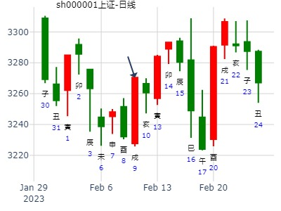
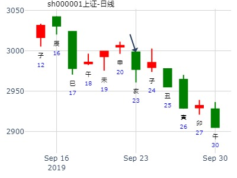
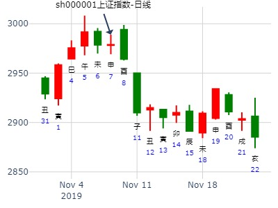

1月11至1月15日大盘预测(周测
公历时间：2021年1月8日15时48分 农历时间：庚子年 十一月二十五日申时
干 支：庚子年 己丑月 丙辰日 丙申时
旬 空：辰巳 午未 子丑 辰巳
神 煞：驿马─寅 桃花─酉 日禄─巳 贵人─酉，亥
中国预测网纳甲六爻排盘
艮宫：山泽损
六神 伏 神 【本 卦】
青龙 ▄▄▄▄▄ 官鬼丙寅木 应
玄武 ▄▄ ▄▄ 妻财丙子水
白虎 ▄▄ ▄▄ 兄弟丙戌土
螣蛇 子孙丙申金 ▄▄ ▄▄ 兄弟丁丑土 世
勾陈 ▄▄▄▄▄ 官鬼丁卯木
朱雀 ▄▄▄▄▄ 父母丁巳火
占事: 今日大盘
时间: 2020-01-23
干支: 己亥年丁丑月乙丑日己卯时 (旬空: 戌亥 )
损静卦
六神 伏神 本 卦
玄武 ▅▅▅▅▅ 官鬼寅木 应
白虎 ▅▅ ▅▅ 妻财子水
腾蛇 ▅▅ ▅▅ 兄弟戌土
勾陈 子孙申金▅▅ ▅▅ 兄弟丑土 世
朱雀 ▅▅▅▅▅ 官鬼卯木
青龙 ▅▅▅▅▅ 父母巳火
源文件名:天同卦问1月23日大盘，山泽损静卦，兄弟持世值日暴跌
风生水起
占事：大盘到2.19走势 起卦方式：手动摇卦
公历时间：2016年1月28日8时30分
干 支：乙未年 己丑月 己酉日 戊辰时
旬 空：辰巳 午未 寅卯 戌亥
艮宫：山泽损
六神 伏 神 【本 卦】
勾陈 ▄▄▄▄▄ 官鬼丙寅木 应
朱雀 ▄▄ ▄▄ 妻财丙子水
青龙 ▄▄ ▄▄ 兄弟丙戌土
玄武 子孙丙申金 ▄▄ ▄▄ 兄弟丁丑土 世
白虎 ▄▄▄▄▄ 官鬼丁卯木
螣蛇 ▄▄▄▄▄ 父母丁巳火

2，张三汉
占事：2022年上证年涨跌卦例收集
公历时间：2022年2月4日12时5分
干 支：壬寅年 壬寅月 戊子日 戊午时
旬 空：辰巳 辰巳 午未 子丑
神 煞：驿马─寅 桃花─酉 日禄─巳 贵人─丑，未
艮宫：山泽损
六神 伏 神 【本 卦】
朱雀 ▄▄▄▄▄ 官鬼丙寅木 应
青龙 ▄▄ ▄▄ 妻财丙子水
玄武 ▄▄ ▄▄ 兄弟丙戌土
白虎 子孙丙申金 ▄▄ ▄▄ 兄弟丁丑土 世
螣蛇 ▄▄▄▄▄ 官鬼丁卯木
勾陈 ▄▄▄▄▄ 父母丁巳火

占事：2012壬辰年股市行情？
卦主：甲丙-红太阳
公历起卦时间：2012年2月4日19时30分 (手工指定)
干支：壬辰年 壬寅月 乙未日 丙戌时 （日空：辰巳）
艮宫：山泽损
六神 伏神 本 卦
玄武 官鬼丙寅木 ▅▅▅▅▅ 应
白虎 妻财丙子水 ▅▅ ▅▅
腾蛇 兄弟丙戌土 ▅▅ ▅▅
勾陈 子孙丙申金 兄弟丁丑土 ▅▅ ▅▅ 世
朱雀 官鬼丁卯木 ▅▅▅▅▅
青龙 父母丁巳火 ▅▅▅▅▅
亥月冲实父母爻，跌。
子月财爻值卦，涨。
未月冲世爻兄弟暗动(壬辰年兄弟旺），论暗动，不论月破。 （以寅月论，则是月破）
午月财爻月破。
寅月冲申金暗动（以辰年认，申为旺，逢月冲为暗动）
卯月合年破的戌土，跌。
辰月，则戌土兄弟爻月破又年破，涨。
方大炭素何时跌到6.00？现在6.21元星期日
公历起卦时间：2021年2月7日20时9分 (电脑自动)
干支：辛丑年 庚寅月 丙戌日 戊戌时 （日空：午未）
神煞：驿马－申 桃花－卯 日禄－巳 贵人－酉，亥
艮宫：山泽损
六神 伏神 本 卦
青龙 官鬼丙寅木 ▅▅▅▅▅ 应
玄武 妻财丙子水 ▅▅ ▅▅
白虎 兄弟丙戌土 ▅▅ ▅▅
螣蛇 子孙丙申金 兄弟丁丑土 ▅▅ ▅▅ 世
勾陈 官鬼丁卯木 ▅▅▅▅▅
朱雀 父母丁巳火 ▅▅▅▅▅
占事：测亥日大盘
公历起卦时间：2023年2月9日11时29分 (在线摇卦)
干支：癸卯年 甲寅月 戊戌日 戊午时 （日空：辰巳）
神煞：驿马－申 桃花－卯 日禄－巳 贵人－丑，未
艮宫：山泽损
六神 伏神 本 卦
朱雀 官鬼丙寅木 ▅▅▅▅▅ 应
青龙 妻财丙子水 ▅▅ ▅▅
玄武 兄弟丙戌土 ▅▅ ▅▅
白虎 子孙丙申金 兄弟丁丑土 ▅▅ ▅▅ 世
螣蛇 官鬼丁卯木 ▅▅▅▅▅
勾陈 父母丁巳火 ▅▅▅▅▅
参考卦：2023-02-09
干支：癸卯年 甲寅月 戊戌日 庚申时 （日空：辰巳）
神煞：驿马－申 桃花－卯 日禄－巳 贵人－丑，未
兑宫：地山谦 兑宫：水山蹇
六神 伏神 本 卦 变 卦
朱雀 兄弟癸酉金 ▅▅ ▅▅ 子孙戊子水 ▅▅ ▅▅
青龙 子孙癸亥水 ▅▅ ▅▅ 世 ╳→ 父母戊戌土 ▅▅▅▅▅
玄武 父母癸丑土 ▅▅ ▅▅ 兄弟戊申金 ▅▅ ▅▅ 世
白虎 兄弟丙申金 ▅▅▅▅▅ 兄弟丙申金 ▅▅▅▅▅
螣蛇 妻财丁卯木 官鬼丙午火 ▅▅ ▅▅ 应 官鬼丙午火 ▅▅ ▅▅
勾陈 父母丙辰土 ▅▅ ▅▅ 父母丙辰土 ▅▅ ▅▅ 应

占事：2015年3月大盘涨跌？
公历起卦时间：2015年2月27日16时3分 (手工指定)
干支：乙未年 戊寅月 甲戌日 壬申时 （日空：申酉）
神煞：驿马－申 桃花－卯 日禄－寅 贵人－丑，未
艮宫：山泽损
六神 伏神 本 卦
玄武 官鬼丙寅木 ▅▅▅▅▅ 应
白虎 妻财丙子水 ▅▅ ▅▅
腾蛇 兄弟丙戌土 ▅▅ ▅▅
勾陈 子孙丙申金 兄弟丁丑土 ▅▅ ▅▅ 世
朱雀 官鬼丁卯木 ▅▅▅▅▅
青龙 父母丁巳火 ▅▅▅▅▅
上证3.18收盘走势？
公历起卦时间：2022年3月18日8时23分 (电脑自动)
干支：壬寅年 癸卯月 庚午日 庚辰时 （日空：戌亥）
神煞：驿马－申 桃花－卯 日禄－申 贵人－丑，未
艮宫：山泽损
六神 伏神 本 卦
螣蛇 官鬼丙寅木 ▅▅▅▅▅ 应
勾陈 妻财丙子水 ▅▅ ▅▅
朱雀 兄弟丙戌土 ▅▅ ▅▅
青龙 子孙丙申金 兄弟丁丑土 ▅▅ ▅▅ 世
玄武 官鬼丁卯木 ▅▅▅▅▅
白虎 父母丁巳火 ▅▅▅▅▅
占事：今年大盘走势
西湖散人 起卦方式：手动摇卦
公历时间：2012年3月28日22时53分
干 支：壬辰年 癸卯月 戊子日 癸亥时
旬 空：午未 辰巳 (午未) 子丑
艮宫：山泽损
六神 伏 神 【本 卦】
朱雀 ▄▄▄▄▄ 官鬼丙寅木 应
青龙 ▄▄ ▄▄ 妻财丙子水
玄武 ▄▄ ▄▄ 兄弟丙戌土
白虎 子孙丙申金 ▄▄ ▄▄ 兄弟丁丑土 世
螣蛇 ▄▄▄▄▄ 官鬼丁卯木
勾陈 ▄▄▄▄▄ 父母丁巳火
《易经》第四十一卦 损 山泽损 艮上兑下
占事：4月12日到19日大盘将走损卦
壬辰年三月廿四(2012/04/14 21:13:42)
壬辰 甲辰 乙巳 丁亥 (寅卯空)
山泽损
玄武 官鬼寅木 ／ 应
白虎 妻财子水 ∥
腾蛇 兄弟戌土 ∥
子孙申金：勾陈 兄弟丑土 ∥ 艮
朱雀 官鬼卯木 ／
青龙 父母巳火 ／
上证大盘半月卦
公历时间：2016年4月18日3时18分
干 支：丙申年 壬辰月 庚午日 戊寅时
旬 空：辰巳 午未 戌亥 申酉
神 煞：驿马─申 桃花─卯 日禄─申 贵人─丑，未
艮宫：山泽损
六神 伏 神 【本 卦】
螣蛇 ▄▄▄▄▄ 官鬼丙寅木 应
勾陈 ▄▄ ▄▄ 妻财丙子水
朱雀 ▄▄ ▄▄ 兄弟丙戌土
青龙 子孙丙申金 ▄▄ ▄▄ 兄弟丁丑土 世
玄武 ▄▄▄▄▄ 官鬼丁卯木
白虎 ▄▄▄▄▄ 父母丁巳火
丁东 发表于 2022-5-1 13:38
是啊，股民太不容易了。
下面这个卦，我输了1.6万。
下面这个卦，赢了2万。
603176汇通股份明日行情？ 2022年4月28日甲辰月辛亥日【寅卯空】
艮宫：山泽损
六神 伏 神 【本 卦】
白虎 ▄▄▄▄▄ 官鬼丙寅木 应
螣蛇 ▄▄ ▄▄ 妻财丙子水
勾陈 ▄▄ ▄▄ 兄弟丙戌土
朱雀 子孙丙申金 ▄▄ ▄▄ 兄弟丁丑土 世
青龙 ▄▄▄▄▄ 官鬼丁卯木
玄武 ▄▄▄▄▄ 父母丁巳火
这个为何到了子日涨停板，主要是因财来合世，是合理的，但你那个华纺股份到了午日，就不同了，午日能说是暗动吗？这不符合暗动的理论。
2009年5月手摇大盘预测（练习勿参）---【转贴】
占事：五月大盘
公历起卦时间：2009年4月30日10时35分 (手工指定)
干支：己丑年 戊辰月 乙巳日 辛巳时 （日空：寅卯）
神煞：驿马－亥 桃花－午 日禄－卯 贵人－子，申
艮宫：山泽损
六神 伏神 本 卦
玄武 ▅▅▅▅▅ 官鬼寅木 应
白虎 ▅▅ ▅▅ 妻财子水
腾蛇 ▅▅ ▅▅ 兄弟戌土
勾陈 子孙申金▅▅ ▅▅ 兄弟丑土 世
朱雀 ▅▅▅▅▅ 官鬼卯木
青龙 ▅▅▅▅▅ 父母巳火
占事: 002240盛新锂能何时再涨？王
时间: 2022-07-28
干支: 壬寅年丁未月壬午日庚戌时 (旬空: 申酉 )
损静卦
六神 伏神 本 卦
白虎 ▅▅▅▅▅ 官鬼寅木 应
腾蛇 ▅▅ ▅▅ 妻财子水
勾陈 ▅▅ ▅▅ 兄弟戌土
朱雀 子孙申金▅▅ ▅▅ 兄弟丑土 世
青龙 ▅▅▅▅▅ 官鬼卯木
玄武 ▅▅▅▅▅ 父母巳火
源文件名:002240盛新锂业何时涨？ 山泽损静卦。
占事：裕隆原创测大盘本周走势
2017-07-31
干支：丁酉年 丁未月 己未日 己巳时 （日空：子丑）
神煞：驿马－巳 桃花－子 日禄－午 贵人－子，申
艮宫：山泽损
六神 伏神 本 卦
勾陈 官鬼丙寅木 ▅▅▅▅▅ 应
朱雀 妻财丙子水 ▅▅ ▅▅
青龙 兄弟丙戌土 ▅▅ ▅▅
玄武 子孙丙申金 兄弟丁丑土 ▅▅ ▅▅ 世
白虎 官鬼丁卯木 ▅▅▅▅▅
腾蛇 父母丁巳火 ▅▅▅▅▅
解：略
周一涨
这周不好推断。断语犹豫到现在也没写出来，周一涨，周五跌，其余的日子不见凶，所幸将近秋令，就算跌也不多。
驰宏锌锗8.19收盘走势？
公历起卦时间：2021年8月19日6时10分 (电脑自动)
干支：辛丑年 丙申月 己亥日 丁卯时 （日空：辰巳）
神煞：驿马－巳 桃花－子 日禄－午 贵人－子，申
艮宫：山泽损
六神 伏神 本 卦
勾陈 官鬼丙寅木 ▅▅▅▅▅ 应
朱雀 妻财丙子水 ▅▅ ▅▅
青龙 兄弟丙戌土 ▅▅ ▅▅
玄武 子孙丙申金 兄弟丁丑土 ▅▅ ▅▅ 世
白虎 官鬼丁卯木 ▅▅▅▅▅
螣蛇 父母丁巳火 ▅▅▅▅▅
占事：江西铜业600362本月行情走势？
起卦方式：手动摇卦
公历时间：2014年9月6日9时34分 甲午年 壬申月 庚辰日 辛巳时 (申酉)
艮宫：山泽损
六神 伏 神 【本 卦】
螣蛇 ▄▄▄▄▄ 官鬼丙寅木 应
勾陈 ▄▄ ▄▄ 妻财丙子水
朱雀 ▄▄ ▄▄ 兄弟丙戌土
青龙 子孙丙申金 ▄▄ ▄▄ 兄弟丁丑土 世
玄武 ▄▄▄▄▄ 官鬼丁卯木
白虎 ▄▄▄▄▄ 父母丁巳火
兄弟持世，仍是涨不动。
兄弟戌土暗动还是日破？
只要兄弟不是空破入墓，就有效，涨不动。
占事：酉月大盘还会跌吗？
公历起卦时间：2015年9月7日21时6分 (在线王)
干支：乙未年 甲申月 丙戌日 己亥时 （日空：午未）
艮宫：山泽损 艮宫：山泽损
六神 伏神 本 卦 变 卦
青龙 官鬼丙寅木 ▅▅▅▅▅ 应 官鬼丙寅木 ▅▅▅▅▅ 应
玄武 妻财丙子水 ▅▅ ▅▅ 妻财丙子水 ▅▅ ▅▅
白虎 兄弟丙戌土 ▅▅ ▅▅ 兄弟丙戌土 ▅▅ ▅▅
腾蛇 子孙丙申金 兄弟丁丑土 ▅▅ ▅▅ 世 兄弟丁丑土 ▅▅ ▅▅ 世
勾陈 官鬼丁卯木 ▅▅▅▅▅ 官鬼丁卯木 ▅▅▅▅▅
朱雀 父母丁巳火 ▅▅▅▅▅ 父母丁巳火 ▅▅▅▅▅
张三汉 发表于 2020-12-31 14:08
老师我附上五个卦，老师看看
四个大盘卦，一个期货卦
上证大盘周卦
公历时间：2012年9月14日7时9分 农历时间：壬辰年 七月二十九日辰时
干 支：壬辰年 己酉月 戊寅日 丙辰时
旬 空：午未 寅卯 申酉 子丑
神 煞：驿马─申 桃花─卯 日禄─巳 贵人─丑，未
中国预测网纳甲六爻排盘
艮宫：山泽损
六神 伏 神 【本 卦】
朱雀 ▄▄▄▄▄ 官鬼丙寅木 应
青龙 ▄▄ ▄▄ 妻财丙子水
玄武 ▄▄ ▄▄ 兄弟丙戌土
白虎 子孙丙申金 ▄▄ ▄▄ 兄弟丁丑土 世
螣蛇 ▄▄▄▄▄ 官鬼丁卯木
勾陈 ▄▄▄▄▄ 父母丁巳火
上证大盘周卦
公历时间：2015年9月19日11时16分 农历时间：乙未年 八月初七日午时
干 支：乙未年 乙酉月 戊戌日 戊午时
旬 空：辰巳 午未 辰巳 子丑
神 煞：驿马─申 桃花─卯 日禄─巳 贵人─丑，未
中国预测网纳甲六爻排盘
艮宫：山泽损
六神 伏 神 【本 卦】
朱雀 ▄▄▄▄▄ 官鬼丙寅木 应
青龙 ▄▄ ▄▄ 妻财丙子水
玄武 ▄▄ ▄▄ 兄弟丙戌土
白虎 子孙丙申金 ▄▄ ▄▄ 兄弟丁丑土 世
螣蛇 ▄▄▄▄▄ 官鬼丁卯木
勾陈 ▄▄▄▄▄ 父母丁巳火
主题：Au99.99 黄金周K线卦
己亥 癸酉 壬戌 己酉 (子丑空) 己亥年八月廿四(2019/09/22 17:50:04)
山泽损
白虎 官鬼壬寅 ／ 应
腾蛇 妻财庚子 ∥
勾陈 兄弟庚戌 ∥
子孙戊申：朱雀 兄弟辛丑 ∥ 艮
青龙 官鬼癸卯 ／
玄武 父母乙巳 ／
己亥 癸酉 癸亥 癸亥 (子丑空) 己亥年八月廿五(2019/09/23 22:40:52)
山泽损 地泽临
白虎 官鬼甲寅 ○ 应 子孙辛酉 ∥
腾蛇 妻财壬子 ∥ 妻财癸亥 ∥ 应
勾陈 兄弟壬戌 ∥ 兄弟癸丑 ∥
子孙庚申：朱雀 兄弟癸丑 ∥ 艮 兄弟癸丑 ∥
青龙 官鬼乙卯 ／ 官鬼乙卯 ／ 坤
玄武 父母丁巳 ／ 父母丁巳 ／

姓名：招财公主 硬币卦
占事：佳士科技未来一个月走势？
钱币卦
公历时间：2014年9月24日10时50分
甲午年 癸酉月 戊戌日 丁巳时 (辰巳)
艮宫：山泽损
六神 伏 神 【本 卦】
朱雀 ▄▄▄▄▄ 官鬼丙寅木 应
青龙 ▄▄ ▄▄ 妻财丙子水
玄武 ▄▄ ▄▄ 兄弟丙戌土
白虎 子孙丙申金 ▄▄ ▄▄ 兄弟丁丑土 世
螣蛇 ▄▄▄▄▄ 官鬼丁卯木
勾陈 ▄▄▄▄▄ 父母丁巳火
第十二期１０月１３日到１７日预测上证指数比赛
公历时间：2008年10月10日16时32分 星期五
干支：戊子年 壬戌月 癸未日 庚申时 (旬空：申酉)
神煞：驿马—巳 桃花—子 日禄—子 贵人—卯，巳
艮宫：山泽损
六神 伏 神 【本 卦】
白虎 ▅▅▅▅▅ 官鬼丙寅木 应
螣蛇 ▅▅ ▅▅ 妻财丙子水
勾陈 ▅▅ ▅▅ 兄弟丙戌土
朱雀 子孙丙申金 ▅▅ ▅▅ 兄弟丁丑土 世
青龙 ▅▅▅▅▅ 官鬼丁卯木
玄武 ▅▅▅▅▅ 父母丁巳火
明天11月8日上证大盘走势？？？
公历时间：2019年11月7日21时1分
干 支：己亥年 甲戌月 戊申日 癸亥时
旬 空：辰巳 申酉 寅卯 子丑
神 煞：驿马─寅 桃花─酉 日禄─巳 贵人─丑，未
艮宫：山泽损
六神 伏 神 【本 卦】
朱雀 ▄▄▄▄▄ 官鬼丙寅木 应
青龙 ▄▄ ▄▄ 妻财丙子水
玄武 ▄▄ ▄▄ 兄弟丙戌土
白虎 子孙丙申金 ▄▄ ▄▄ 兄弟丁丑土 世
螣蛇 ▄▄▄▄▄ 官鬼丁卯木
勾陈 ▄▄▄▄▄ 父母丁巳火
请各位老师断卦，看看这卦有无涨跌信息

占事: 下周上证指数走势？天同
时间: 2022-11-27
干支: 壬寅年辛亥月甲申日辛未时 (旬空: 午未 )
损静卦
六神 伏神 本 卦
玄武 ▅▅▅▅▅ 官鬼寅木 应
白虎 ▅▅ ▅▅ 妻财子水
腾蛇 ▅▅ ▅▅ 兄弟戌土
勾陈 子孙申金▅▅ ▅▅ 兄弟丑土 世
朱雀 ▅▅▅▅▅ 官鬼卯木
青龙 ▅▅▅▅▅ 父母巳火
损下益上。11-28日宣布三条红线破功，房企又可以到股市融资，地产集体涨停。
源文件名:损静卦，1127周上证。
此卦经典，两天内不同人问到一模一样的卦。
李淼 发表于 2021-1-8 17:52
损卦就是让人有损失，直接断跌就是
老师我有一损卦是涨的，老师看看原因
大盘周卦
公历时间：2014年12月21日20时43分 农历时间：甲午年 十月三十日戌时
干 支：甲午年 丙子月 丙寅日 戊戌时
旬 空：辰巳 申酉 戌亥 辰巳
神 煞：驿马─申 桃花─卯 日禄─巳 贵人─酉，亥
中国预测网纳甲六爻排盘
艮宫：山泽损
六神 伏 神 【本 卦】
青龙 ▄▄▄▄▄ 官鬼丙寅木 应
玄武 ▄▄ ▄▄ 妻财丙子水
白虎 ▄▄ ▄▄ 兄弟丙戌土
螣蛇 子孙丙申金 ▄▄ ▄▄ 兄弟丁丑土 世
勾陈 ▄▄▄▄▄ 官鬼丁卯木
朱雀 ▄▄▄▄▄ 父母丁巳火
涨1.6%
600586金晶科技周卦
干支：庚子年 戊子月 丁未日 丙午时 （日空：寅卯）
时间: 2020-12-30
干支: 庚子年戊子月丁未日 (旬空: 寅卯 )
损静卦
六神 伏神 本 卦
青龙 ▅▅▅▅▅ 官鬼寅木 应
玄武 ▅▅ ▅▅ 妻财子水
白虎 ▅▅ ▅▅ 兄弟戌土
腾蛇 子孙申金▅▅ ▅▅ 兄弟丑土 世
勾陈 ▅▅▅▅▅ 官鬼卯木
朱雀 ▅▅▅▅▅ 父母巳火